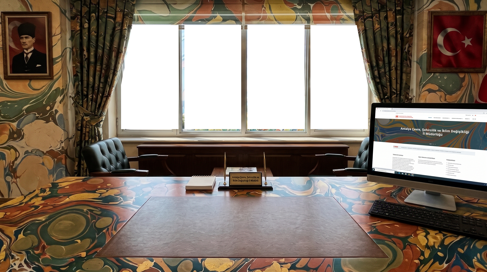
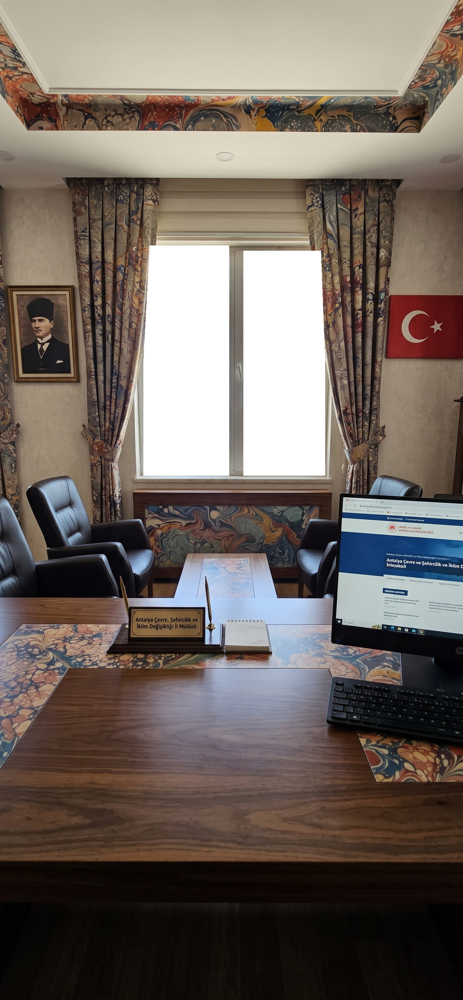
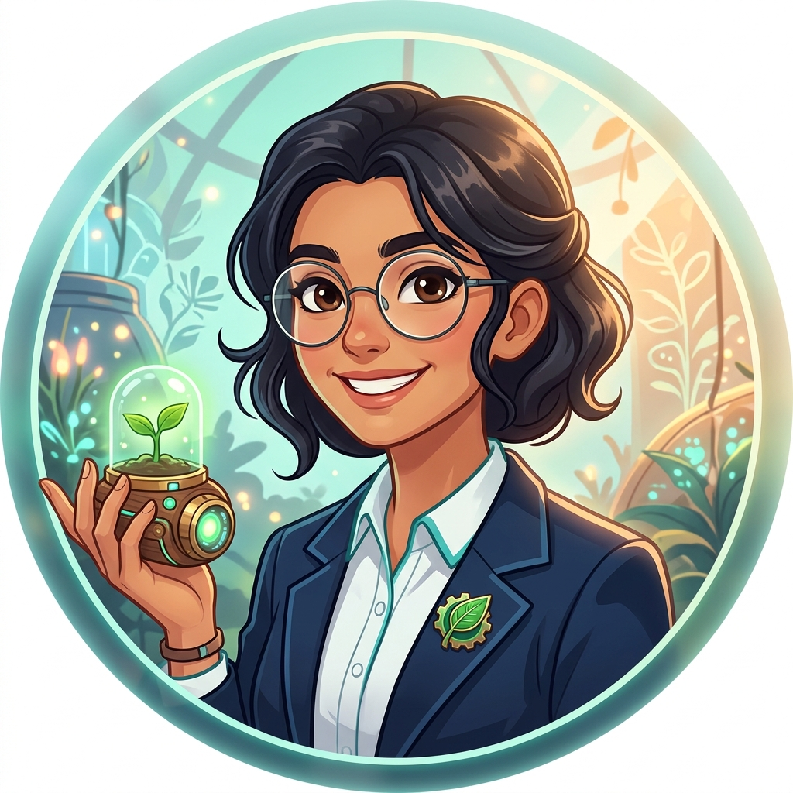

📁✕
RET ET
RET ET
📋✓
ONAYLA
ONAYLA
📁 Sümen Altı (0/3)
✓ ONAYLANMIŞTIR • GEREĞİ YAPILA
✕ UYGUN GÖRÜLMEMİŞTİR
📁 İNCELEMEYE ALINDI • SÜMEN ALTI
🏛️
T.C. ÇEVRE ŞEHİRCİLİK MÜDÜRLÜĞÜ
İklim Değişikliği ve Sıfır Atık Şube Müdürlüğü

KONU: Okul Yemekhanesi Biyogaz Pilot Tesisi
"Fen Lisesi pansiyon yemekhane organik atıklarının fermantasyonuyla biyogaz elde edilmesi ve karbon salımının %30 azaltılması hedeflenmektedir. 25.000 TL ar-ge hibe tahsisini olurlarınıza arz ederim."